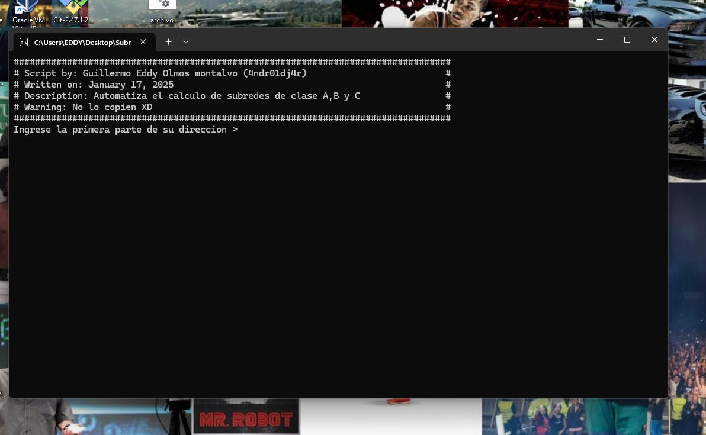

Herramienta de Subnetting
1010101010101010010101011101010101011010101010101001010101010010010101010101011110101010101011001010110100101010101010010100

Hace algunos días llegué tarde a mi clase de redes. Para justificar mi falta, el profesor me pidió resolver varios ejercicios de subneteo en el pizarrón. Debido al poco tiempo que quedaba de clase y a algunos errores en mis cálculos, no logré terminarlos correctamente. Al salir de clase pensé: ¿y si programo una herramienta que haga estos cálculos automáticamente?. Lo que comenzó como una simple idea terminó convirtiéndose en un proyecto que me tomó aproximadamente tres días de desarrollo y que, además, me ayudó a comprender mucho mejor cómo funciona el subneteo.
Objetivo
El objetivo era crear un script capaz de recibir una dirección IP y la cantidad de subredes necesarias para posteriormente calcular: La máscara de subred. El prefijo CIDR. Los saltos de red. Las direcciones de red. Las direcciones utilizables. La dirección de broadcast. Antes de realizar cualquier cálculo, necesitaba definir correctamente los datos de entrada. Durante el primer día me concentré principalmente en el sistema de entrada de datos. Necesitaba obtener dos valores: La dirección IP a subnetear. La cantidad de subredes requeridas. Al principio pensé en utilizar input_raw(), pero descubrí que esta función ya no está disponible en Python 3.10, por lo que tuve que utilizar input(). Esto generó un pequeño inconveniente: input() devuelve una cadena de texto, mientras que para realizar operaciones matemáticas necesitaba trabajar con números enteros. Para la cantidad de subredes el problema fue sencillo de resolver utilizando int(), pero con la dirección IP era diferente debido a que contiene puntos que separan los octetos. Inicialmente intenté almacenar la dirección IP directamente en un arreglo, pero la solución resultó poco práctica para los cálculos posteriores. Finalmente decidí solicitar cada octeto por separado, lo que simplificó considerablemente el procesamiento y me permitió acceder fácilmente al primer octeto para determinar la clase de la red.
Manejo del input
Una vez resuelta la entrada de datos, el siguiente paso fue calcular la máscara de subred. Para determinar cuántos bits debían agregarse al prefijo original utilicé el principio: 2^n >= cantidad_de_subredes Donde: n representa la cantidad de bits prestados. El resultado debe ser mayor o igual al número de subredes necesarias. Posteriormente determiné la clase de la dirección IP utilizando el primer octeto. Dependiendo de la clase obtenía un prefijo base: Clase A = /8 Clase B = /16 Clase C = /24 Una vez conocido el prefijo inicial, simplemente sumé los bits prestados obtenidos anteriormente para calcular el nuevo prefijo de red. Construcción de la Máscara Con el prefijo calculado, construí la máscara bit por bit. Primero generé una secuencia de unos (1) equivalente a la cantidad de bits de red. Después completé el resto de los 32 bits con ceros (0) para representar la parte correspondiente a los hosts. Posteriormente dividí estos bits en grupos de ocho para formar cada octeto de la máscara. Finalmente recorrí cada octeto y calculé su valor decimal sumando las potencias de dos correspondientes a los bits encendidos. De esta manera obtuve tanto la máscara en binario como su representación decimal. Cálculo de los Saltos Con la máscara ya calculada, el resto del proceso fue mucho más sencillo. A partir del tamaño del bloque pude determinar los saltos entre subredes y generar automáticamente: Dirección de red. Primera dirección utilizable. Última dirección utilizable. Dirección de broadcast. Para obtener la primera dirección utilizable simplemente sumé uno a la dirección de red. Para calcular la dirección de broadcast utilicé la dirección anterior a la siguiente subred. Finalmente, la última dirección utilizable se obtuvo restando una unidad a la dirección de broadcast.
NO CODE
Después de tres días de trabajo conseguí una herramienta funcional capaz de automatizar completamente los cálculos de subneteo. Aunque el proyecto surgió por una situación bastante simple en clase, terminó ayudándome a comprender mucho mejor conceptos como: Clases de red. Prefijos CIDR. Máscaras de subred. Bits prestados. Direcciones de broadcast. Rangos de hosts utilizables.
Mirando atrás, el proyecto parece relativamente sencillo, pero durante el desarrollo encontré varios problemas que me obligaron a investigar y comprender mejor cómo funcionan realmente las redes IP. Además de obtener una herramienta útil para futuras prácticas, terminé aprendiendo mucho más de lo que habría aprendido resolviendo ejercicios de forma manual. Y quizá lo más importante: este proyecto fue una de las razones por las que decidí comenzar este blog, con la intención de documentar futuros experimentos, proyectos y aprendizajes relacionados con programación, redes y ciberseguridad.